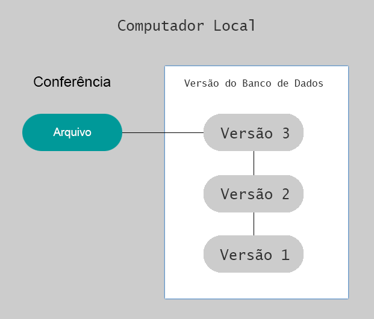

<!doctype html>
<html lang="pt-br">
  
  <head>
    <meta charset="utf-8">
    <meta name="viewport" content="width=device-width, initial-scale=1">
    <title>ProGit pt-br</title>
    <link href="https://cdn.jsdelivr.net/npm/bootstrap@5.3.0-alpha3/dist/css/bootstrap.min.css" rel="stylesheet" integrity="sha384-KK94CHFLLe+nY2dmCWGMq91rCGa5gtU4mk92HdvYe+M/SXH301p5ILy+dN9+nJOZ" crossorigin="anonymous">
    <style type="text/css">

      .style1 {color: #999999}
      .style2 {color: #FF0000}

    </style>
</head>

<body>

<div class="container">
    

  <h1>ProGit</h1>

  <h2>
Pro Git
Scott Chacon, Ben Straub
Version 2.1.394-2-g428d69ac, 2023-05-09

  </h2>

  <h3>
    License
This work is licensed under the Creative Commons Attribution-NonCommercial-ShareAlike 3.0
Unported License. To view a copy of this license, visit https://creativecommons.org/licenses/by-ncsa/3.0 or send a letter to Creative Commons, PO Box 1866, Mountain View, CA 94042, USA.

  </h3>

  <h4>Preface by Scott Chacon</h4>

  <p>

Welcome to the second edition of Pro Git. The first edition was published over four years ago now.
Since then a lot has changed and yet many important things have not. While most of the core
commands and concepts are still valid today as the Git core team is pretty fantastic at keeping
things backward compatible, there have been some significant additions and changes in the
community surrounding Git. The second edition of this book is meant to address those changes and
update the book so it can be more helpful to the new user.
When I wrote the first edition, Git was still a relatively difficult to use and barely adopted tool for
the harder core hacker. It was starting to gain steam in certain communities, but had not reached
anywhere near the ubiquity it has today. Since then, nearly every open source community has
adopted it. Git has made incredible progress on Windows, in the explosion of graphical user
interfaces to it for all platforms, in IDE support and in business use. The Pro Git of four years ago
knows about none of that. One of the main aims of this new edition is to touch on all of those new
frontiers in the Git community.
The Open Source community using Git has also exploded. When I originally sat down to write the
book nearly five years ago (it took me a while to get the first version out), I had just started working
at a very little known company developing a Git hosting website called GitHub. At the time of
publishing there were maybe a few thousand people using the site and just four of us working on it.
As I write this introduction, GitHub is announcing our 10 millionth hosted project, with nearly 5
million registered developer accounts and over 230 employees. Love it or hate it, GitHub has
heavily changed large swaths of the Open Source community in a way that was barely conceivable
when I sat down to write the first edition.
I wrote a small section in the original version of Pro Git about GitHub as an example of hosted Git
which I was never very comfortable with. I didn’t much like that I was writing what I felt was
essentially a community resource and also talking about my company in it. While I still don’t love
that conflict of interests, the importance of GitHub in the Git community is unavoidable. Instead of
an example of Git hosting, I have decided to turn that part of the book into more deeply describing
what GitHub is and how to effectively use it. If you are going to learn how to use Git then knowing
how to use GitHub will help you take part in a huge community, which is valuable no matter which
Git host you decide to use for your own code.
The other large change in the time since the last publishing has been the development and rise of
the HTTP protocol for Git network transactions. Most of the examples in the book have been
changed to HTTP from SSH because it’s so much simpler.
It’s been amazing to watch Git grow over the past few years from a relatively obscure version
control system to basically dominating commercial and open source version control. I’m happy that
Pro Git has done so well and has also been able to be one of the few technical books on the market
that is both quite successful and fully open source.
I hope you enjoy this updated edition of Pro Git.

  </p>

    <h4>Preface by Ben Straub</h4>
    <p>
The first edition of this book is what got me hooked on Git. This was my introduction to a style of
making software that felt more natural than anything I had seen before. I had been a developer for
several years by then, but this was the right turn that sent me down a much more interesting path
than the one I was on.
Now, years later, I’m a contributor to a major Git implementation, I’ve worked for the largest Git
hosting company, and I’ve traveled the world teaching people about Git. When Scott asked if I’d be
interested in working on the second edition, I didn’t even have to think.
It’s been a great pleasure and privilege to work on this book. I hope it helps you as much as it did
me.

    </p>


<h4>Dedications</h4>
    <p>
      
To my wife, Becky, without whom this adventure never would have begun. — Ben
This edition is dedicated to my girls. To my wife Jessica who has supported me for all of these years
and to my daughter Josephine, who will support me when I’m too old to know what’s going on. —
Scott
    </p>
<h4>Contributors</h4>

<p>
  Since this is an Open Source book, we have gotten several errata and content changes donated over
the years. Here are all the people who have contributed to the English version of Pro Git as an open
source project. Thank you everyone for helping make this a better book for everyone.
</p>

<p>
4wk-       Jonathan Sebastian Krause
Adam Laflamme Jordan Hayashi Sergey Kuznetsov
Adrien Ollier Joris Valette Severino Lorilla Jr
Akrom K Josh Byster Shengbin Meng
Alan D. Salewski Joshua Webb Sherry Hietala
Alba Mendez Junjie Yuan Shi Yan
Aleh Suprunovich Junyeong Yim Siarhei Bobryk
Alex Povel Justin Clift Siarhei Krukau
Alexander Bezzubov Jörn Auerbach Skyper
Alexandre Garnier Kaartic Sivaraam Smaug123
Alfred Myers KatDwo Snehal Shekatkar
Amanda Dillon Katrin Leinweber Solt Budavári
Andreas Bjørnestad Kausar Mehmood Song Li
Andrei Dascalu Keith Hill Stephan van Maris
Andrew Layman Kenneth Kin Lum Steven Roddis
Andrew MacFie Kenneth Lum Stuart P. Bentley
Andrew Metcalf Klaus Frank SudarsanGP
Andrew Murphy Kristijan "Fremen" Velkovski Suhaib Mujahid
AndyGee Krzysztof Szumny Susan Stevens
AnneTheAgile Kyrylo Yatsenko Sven Selberg
Anthony Loiseau Lars Vogel Thanix
Anton Trunov Laxman Thomas Ackermann
Antonello Piemonte Lazar95 Thomas Hartmann
Antonino Ingargiola Leonard Laszlo Tiffany
Ardavast Dayleryan Linus Heckemann Tom Schady
Artem Leshchev Logan Hasson Tomas Fiers
Atul Varma Louise Corrigan Tomoki Aonuma
Bagas Sanjaya Luc Morin Tvirus
Ben Sima Lukas Röllin Tyler Cipriani
Benjamin Dopplinger Marat Radchenko Ud Yzr
Billy Griffin Marcin Sędłak-Jakubowski UgmaDevelopment
Bob Kline Marie-Helene Burle Vadim Markovtsev
Bohdan Pylypenko Marius Žilėnas Vangelis Katsikaros
Borek Bernard Markus KARG Vegar Vikan
Brett Cannon Marti Bolivar Victor Ma
Buzut Mashrur Mia (Sa'ad) Vipul Kumar
C Nguyen Masood Fallahpoor Vitaly Kuznetsov
Cadel Watson Mathieu Dubreuilh Volker Weißmann
Carlos Martín Nieto Matt Cooper Volker-Weissmann
Carlos Tafur Matt Trzcinski Wesley Gonçalves
Chaitanya Gurrapu Matthew Miner William Gathoye
5
Changwoo Park Matthieu Moy William Turrell
Christian Decker Mavaddat Javid Wlodek Bzyl
Christoph Bachhuber Max Coplan Xavier Bonaventura
Christoph Prokop Michael MacAskill Y. E
Christopher Wilson Michael Sheaver Yann Soubeyrand
CodingSpiderFox Michael Welch Your Name
Cory Donnelly Michiel van der Wulp Yue Lin Ho
Cullen Rhodes Miguel Bernabeu Yunhai Luo
Cyril Mike Charles Yusuke SATO
Damien Tournoud Mike Pennisi ajax333221
Dan Schmidt Mike Thibodeau alex-koziell
Daniel Hollas Mikhail Menshikov allen joslin
Daniel Knittl-Frank Mitsuru Kariya andreas
Daniel Shahaf Máximo Cuadros applecuckoo
Daniel Sturm Niels Widger atalakam
Daniele Tricoli Niko Stotz axmbo
Daniil Larionov Nils Reuße bripmccann
Danny Lin Noelle Leigh brotherben
David Rogers OliverSieweke delta4d
Davide Angelocola Olleg Samoylov devwebcl
Denis Savitskiy Osman Khwaja dualsky
Dexter Owen evanderiel
Dexter Morganov Pablo Schläpfer eyherabh
DiamondeX Pascal Berger flip111
Dieter Ziller Pascal Borreli flyingzumwalt
Dino Karic Patrice Krakow franjozen
Dmitri Tikhonov Patrick Steinhardt goekboet
Dmitriy Smirnov Pavel Janík grgbnc
Doug Richardson Paweł Krupiński haripetrov
Duncan Dean Pessimist i-give-up
Dustin Frank Peter Kokot iprok
Ed Flanagan Petr Bodnar jingsam
Eden Hochbaum Petr Janeček jliljekrantz
Eric Henziger Petr Kajzar johnhar
Explorare Phil Mitchell leerg
Ezra Buehler Philippe Blain maks
Fabien-jrt Philippe Miossec mmikeww
Fady Nagh Pratik Nadagouda mosdalsvsocld
Felix Nehrke Rafi nicktime
Filip Kucharczyk Raphael R noureddin
Fornost461 Ray Chen patrick96
Frank Rex Kerr paveljanik
Frederico Mazzone Reza Ahmadi pedrorijo91
Frej Drejhammar Richard Hoyle peterwwillis
Guthrie McAfee Armstrong Ricky Senft petsuter
HairyFotr Rintze M. Zelle rahrah
Hamidreza Mahdavipanah Rob Blanco rmzelle
Haruo Nakayama Robert P. Goldman root
Helmut K. C. Tessarek Robert P. J. Day sanders@oreilly.com
Hidde de Vries Robert Theis sharpiro
HonkingGoose Rohan D'Souza slavos1
6
Howard Roman Kosenko spacewander
Ignacy Ronald Wampler td2014
Ilker Cat Rory twekberg
Jan Groenewald Rüdiger Herrmann uerdogan
Jaswinder Singh SATO Yusuke ugultopu
Jean-Noël Avila Sam Ford un1versal
Jeroen Oortwijn Sam Joseph xJom
Jim Hill Sanders Kleinfeld xtreak
Joel Davies Sarah Schneider yakirwin
Johannes Dewender Saurav Sachidanand zwPapEr
Johannes Schindelin Scott Bronson ᐯᕮᒪᗝᑕᕮᒣ
John Lin Scott Jones 狄卢
Jon Forrest Sean Head
Jon Freed Sean Jacobs

</p>

  <h2>Começando</h2>
  <p>
    Este capítulo será sobre como começar com o Git. Começaremos explicando algumas informações básicas sobre ferramentas de controle de versão, depois passaremos para como fazer o Git rodar em seu sistema e, finalmente, como configurá-lo para começar a trabalhar. No final deste capítulo, você deve entender por que o Git existe, por que você deve usá-lo e deve estar preparado para isso.
    <button type="button" class="btn btn-sm btn-link" data-bs-toggle="popover" data-bs-title="Getting Started" 
    data-bs-content="This - chapter will be about getting started with Git. We will begin by explaining some background  on version control tools, then move on to how to get Git running on your system and finally how to  get it set up to start working with. At the end of this chapter you should understand why Git is  around, why you should use it and you should be all set up to do so.">Translate</button>
  </p>
<!--
  <bold>Getting Started  This</bold>
  </strong>chapter will be about getting started with Git. We will begin by explaining some background  on version control tools, then move on to how to get Git running on your system and finally how to  get it set up to start working with. At the end of this chapter you should understand why Git is  around, why you should use it and you should be all set up to do so. </p>
-->
  
  <h2>Sobre o Controle de Versão</h2>
  <p>
    O que é “controle de versão” e por que você deveria se importar? O controle de versão é um sistema que registra alterações em um arquivo ou conjunto de arquivos ao longo do tempo para que você possa recuperar versões específicas posteriormente. Para os exemplos deste livro, você usará o código-fonte do software como os arquivos cuja versão está sendo controlada, embora, na realidade, você possa fazer isso com praticamente qualquer tipo de arquivo em um computador. Se você é um designer gráfico ou web e deseja manter todas as versões de uma imagem ou layout (o que você certamente deseja), um Sistema de Controle de Versão (VCS) é uma coisa muito sábia para usar. Ele permite que você reverta os arquivos selecionados para um estado anterior, reverta todo o projeto para um estado anterior, compare as alterações ao longo do tempo, veja quem modificou pela última vez algo que pode estar causando um problema, quem introduziu um problema e quando e muito mais. Usar um VCS geralmente também significa que, se você estragar tudo ou perder arquivos, poderá recuperá-los facilmente. Além disso, você obtém tudo isso com muito pouca sobrecarga.
    <button type="button" class="btn btn-sm btn-link" data-bs-toggle="popover" data-bs-title="About Version Control" 
    data-bs-content="What is “version control”, and why should you care? Version control is a system that records  changes to a file or set of files over time so that you can recall specific versions later. For the  examples in this book, you will use software source code as the files being version controlled,  though in reality you can do this with nearly any type of file on a computer.  If you are a graphic or web designer and want to keep every version of an image or layout (which  you would most certainly want to), a Version Control System (VCS) is a very wise thing to use. It  allows you to revert selected files back to a previous state, revert the entire project back to a  previous state, compare changes over time, see who last modified something that might be causing  a problem, who introduced an issue and when, and more. Using a VCS also generally means that if  you screw things up or lose files, you can easily recover. In addition, you get all this for very little  overhead.">Translate</button>
  </p>
<!--
    <p class="style1"><strong>About Version Control<br>
    </strong>What is “version control”, and why should you care? Version control is a system that records  changes to a file or set of files over time so that you can recall specific versions later. For the  examples in this book, you will use software source code as the files being version controlled,  though in reality you can do this with nearly any type of file on a computer.  If you are a graphic or web designer and want to keep every version of an image or layout (which  you would most certainly want to), a Version Control System (VCS) is a very wise thing to use. It  allows you to revert selected files back to a previous state, revert the entire project back to a  previous state, compare changes over time, see who last modified something that might be causing  a problem, who introduced an issue and when, and more. Using a VCS also generally means that if  you screw things up or lose files, you can easily recover. In addition, you get all this for very little  overhead.</p>
-->

  <h2>Sistemas de Controle de Versão Local</h2>
  <p>
    O método de controle de versão escolhido por muitas pessoas é copiar os arquivos para outro diretório (talvez um diretório com carimbo de data/hora, se forem espertos). Essa abordagem é muito comum porque é muito simples, mas também é incrivelmente propensa a erros. É fácil esquecer em qual diretório você está e acidentalmente gravar no arquivo errado ou copiar arquivos que não pretendia. Para lidar com esse problema, há muito tempo os programadores desenvolveram VCSs locais que tinham um banco de dados simples que mantinha todas as alterações nos arquivos sob controle de revisão.
    <button type="button" class="btn btn-sm btn-link" data-bs-toggle="popover" data-bs-title="Local Version Control Systems" 
    data-bs-content="Many people’s version-control method of choice is to copy files into another directory (perhaps a  time-stamped directory, if they’re clever). This approach is very common because it is so simple, but  it is also incredibly error prone. It is easy to forget which directory you’re in and accidentally write  to the wrong file or copy over files you don’t mean to.  To deal with this issue, programmers long ago developed local VCSs that had a simple database that  kept all the changes to files under revision control.">Translate</button>
  </p>
<!--
  <span class="style1"><strong>Local Version Control Systems<br>
  </strong>Many people’s version-control method of choice is to copy files into another directory (perhaps a  time-stamped directory, if they’re clever). This approach is very common because it is so simple, but  it is also incredibly error prone. It is easy to forget which directory you’re in and accidentally write  to the wrong file or copy over files you don’t mean to.  To deal with this issue, programmers long ago developed local VCSs that had a simple database that  kept all the changes to files under revision control.</span>
-->

  <figure class="figure">
    
    <figcaption class="figure-caption">Figure 1. Local version control diagram.</figcaption>
  </figure>

  <p>
    Uma das ferramentas VCS mais populares era um sistema chamado RCS, que ainda hoje é distribuído em muitos computadores. O RCS funciona mantendo os conjuntos de patches (ou seja, as diferenças entre os arquivos) em um formato especial no disco; ele pode recriar a aparência de qualquer arquivo a qualquer momento, adicionando todos os patches.
    <button type="button" class="btn btn-sm btn-link" data-bs-toggle="popover"  
    data-bs-content="One of the most popular VCS tools was a system called RCS, which is still distributed with many  computers today. RCS works by keeping patch sets (that is, the differences between files) in a special  format on disk; it can then re-create what any file looked like at any point in time by adding up all  the patches.">Translate</button>
  </p>
<!--
  <p class="style1">One of the most popular VCS tools was a system called RCS, which is still distributed with many  computers today. RCS works by keeping patch sets (that is, the differences between files) in a special  format on disk; it can then re-create what any file looked like at any point in time by adding up all  the patches.  </p>
-->

  <h2>Sistemas de Controle de Versão Centralizado</h2>
  <p>
    O próximo grande problema que as pessoas encontram é que precisam colaborar com desenvolvedores em outros sistemas. Para lidar com esse problema,
    <br>
    Sistemas Centralizados de Controle de Versão (CVCSs) foram desenvolvidos. Esses sistemas (como CVS, Subversion e Perforce) têm um único servidor que contém todos os arquivos com versão e vários clientes que verificam os arquivos desse local central. Por muitos anos, este tem sido o padrão para controle de versão.
    <button type="button" class="btn btn-sm btn-link" data-bs-toggle="popover" data-bs-title="Centralized Version Control Systems" 
    data-bs-content="The next major issue that people encounter is that they need to collaborate with developers on  other systems. To deal with this problem. Centralized Version Control Systems (CVCSs) were  developed. These systems (such as CVS, Subversion, and Perforce) have a single server that contains  all the versioned files, and a number of clients that check out files from that central place. For many  years, this has been the standard for version control.">Translate</button>
  </p>
<!--
  <p class="style1">
    <strong>Centralized Version Control Systems<br>
    </strong>The next major issue that people encounter is that they need to collaborate with developers on  other systems. To deal with this problem.
    Centralized Version Control Systems (CVCSs) were  developed. These systems (such as CVS, Subversion, and Perforce) have a single server that contains  all the versioned files, and a number of clients that check out files from that central place. For many  years, this has been the standard for version control.
  </p>
-->

  <figure class="figure">
    
    <figcaption class="figure-caption">Figure 2. Centralized version control diagram.</figcaption>
  </figure>

  <p>
    Esta configuração oferece muitas vantagens, especialmente sobre VCSs locais. Por exemplo, todo mundo sabe até certo ponto o que todos os outros no projeto estão fazendo. Os administradores têm controle refinado sobre quem pode fazer o quê, e é muito mais fácil administrar um CVCS do que lidar com bancos de dados locais em cada cliente.
    <button type="button" class="btn btn-sm btn-link" data-bs-toggle="popover" 
    data-bs-content="This setup offers many advantages, especially over local VCSs. For example, everyone knows to a  certain degree what everyone else on the project is doing. Administrators have fine-grained control  over who can do what, and it’s far easier to administer a CVCS than it is to deal with local databases  on every client.">Translate</button>
  </p>

<!--
  <p class="style1">This setup offers many advantages, especially over local VCSs. For example, everyone knows to a  certain degree what everyone else on the project is doing. Administrators have fine-grained control  over who can do what, and it’s far easier to administer a CVCS than it is to deal with local databases  on every client.  </p>
-->

  <p>
    No entanto, esta configuração também tem algumas desvantagens sérias. O mais óbvio é o ponto único de falha que o servidor centralizado representa. Se esse servidor ficar inativo por uma hora, durante essa hora ninguém poderá colaborar ou salvar alterações de versão em qualquer coisa em que esteja trabalhando. Se o disco rígido no qual o banco de dados central está corrompido e os backups adequados não foram mantidos, você perde absolutamente tudo - todo o histórico do projeto, exceto quaisquer instantâneos únicos que as pessoas tenham em suas máquinas locais. Os VCSs locais sofrem desse mesmo problema — sempre que você tiver todo o histórico do projeto em um único lugar, corre o risco de perder tudo.
    <button type="button" class="btn btn-sm btn-link" data-bs-toggle="popover" 
    data-bs-content="However, this setup also has some serious downsides. The most obvious is the single point of failure  that the centralized server represents. If that server goes down for an hour, then during that hour  nobody can collaborate at all or save versioned changes to anything they’re working on. If the hard  disk the central database is on becomes corrupted, and proper backups haven’t been kept, you lose  absolutely everything — the entire history of the project except whatever single snapshots people  happen to have on their local machines. Local VCSs suffer from this same problem — whenever you  have the entire history of the project in a single place, you risk losing everything.">Translate</button>
  </p>
<!--
  <p class="style1">However, this setup also has some serious downsides. The most obvious is the single point of failure  that the centralized server represents. If that server goes down for an hour, then during that hour  nobody can collaborate at all or save versioned changes to anything they’re working on. If the hard  disk the central database is on becomes corrupted, and proper backups haven’t been kept, you lose  absolutely everything — the entire history of the project except whatever single snapshots people  happen to have on their local machines. Local VCSs suffer from this same problem — whenever you  have the entire history of the project in a single place, you risk losing everything.  </p>
-->

  <h2>Sistemas de Controle de Versão Distribuída</h2>
  <p>
    É aqui que entram os Sistemas de Controle de Versão Distribuída (DVCSs). Em um DVCS (como Git, Mercurial, Bazaar ou Darcs), os clientes não verificam apenas o instantâneo mais recente dos arquivos; em vez disso, eles espelham totalmente o repositório, incluindo seu histórico completo. Portanto, se algum servidor morrer e esses sistemas estiverem colaborando por meio desse servidor, qualquer um dos repositórios do cliente poderá ser copiado de volta para o servidor para restaurá-lo. Cada clone é realmente um backup completo de todos os dados.
    <button type="button" class="btn btn-sm btn-link" data-bs-toggle="popover" data-bs-title="Distributed Version Control Systems" 
    data-bs-content="This is where Distributed Version Control Systems (DVCSs) step in. In a DVCS (such as Git, Mercurial,  Bazaar or Darcs), clients don’t just check out the latest snapshot of the files; rather, they fully  mirror the repository, including its full history. Thus, if any server dies, and these systems were  collaborating via that server, any of the client repositories can be copied back up to the server to  restore it. Every clone is really a full backup of all the data">Translate</button>
  </p>
<!--
  <h2 class="style1">Distributed Version Control Systems  </h2>
  <p class="style1">This is where Distributed Version Control Systems (DVCSs) step in. In a DVCS (such as Git, Mercurial,  Bazaar or Darcs), clients don’t just check out the latest snapshot of the files; rather, they fully  mirror the repository, including its full history. Thus, if any server dies, and these systems were  collaborating via that server, any of the client repositories can be copied back up to the server to  restore it. Every clone is really a full backup of all the data</p>
-->
  <figure class="figure">
    
    <figcaption class="figure-caption">...</figcaption>
  </figure>

  <p></p>
  <p>Furthermore, many of these systems deal pretty well with having several remote repositories they  can work with, so you can collaborate with different groups of people in different ways  simultaneously within the same project. This allows you to set up several types of workflows that  aren’t possible in centralized systems, such as hierarchical models.</p>

  <p><strong>A Short History of Git  </strong></p>
  <p>As with many great things in life, Git began with a bit of creative destruction and fiery controversy.  </p>
  <p>The Linux kernel is an open source software project of fairly large scope. During the early years of  the Linux kernel maintenance (1991–2002), changes to the software were passed around as patches  and archived files. In 2002, the Linux kernel project began using a proprietary DVCS called  BitKeeper.  </p>
  <p>In 2005, the relationship between the community that developed the Linux kernel and the  commercial company that developed BitKeeper broke down, and the tool’s free-of-charge status  was revoked. This prompted the Linux development community (and in particular Linus Torvalds,  the creator of Linux) to develop their own tool based on some of the lessons they learned while  using BitKeeper. Some of the goals of the new system were as follows:  </p>
  <ul>
    <li>Speed</li>
    <li> Simple design</li>
    <li> Strong support for non-linear development (thousands of parallel branches)</li>
    <li> Fully distributed</li>
    <li> Able to handle large projects like the Linux kernel efficiently (speed and data size) </li>
  </ul>
  <p>Since its birth in 2005, Git has evolved and matured to be easy to use and yet retain these initial  qualities. It’s amazingly fast, it’s very efficient with large projects, and it has an incredible  branching system for non-linear development (see Git Branching).</p>
  <p><strong>What is Git?  </strong></p>
  <p>So, what is Git in a nutshell? This is an important section to absorb, because if you understand what  Git is and the fundamentals of how it works, then using Git effectively will probably be much easier  for you. As you learn Git, try to clear your mind of the things you may know about other VCSs, such  as CVS, Subversion or Perforce — doing so will help you avoid subtle confusion when using the tool.  Even though Git’s user interface is fairly similar to these other VCSs, Git stores and thinks about  information in a very different way, and understanding these differences will help you avoid  becoming confused while using it.  </p>
  <p><strong>Snapshots, Not Differences  </strong></p>
  <p>The major difference between Git and any other VCS (Subversion and friends included) is the way  Git thinks about its data. Conceptually, most other systems store information as a list of file-based  changes. These other systems (CVS, Subversion, Perforce, Bazaar, and so on) think of the  information they store as a set of files and the changes made to each file over time (this is  commonly described as delta-based version control). </p>
  <p></p>
  <p>Figure 4. Storing data as changes to a base version of each file  </p>
  <p>Git doesn’t think of or store its data this way. Instead, Git thinks of its data more like a series of  snapshots of a miniature filesystem. With Git, every time you commit, or save the state of your  project, Git basically takes a picture of what all your files look like at that moment and stores a  reference to that snapshot. To be efficient, if files have not changed, Git doesn’t store the file again,  just a link to the previous identical file it has already stored. Git thinks about its data more <strong>like a  stream of snapshots</strong>.</p>
  <p></p>
  <p><strong>Nearly Every Operation Is Local  </strong></p>
  <p>Most operations in Git need only local files and resources to operate — generally no information is  needed from another computer on your network. If you’re used to a CVCS where most operations  have that network latency overhead, this aspect of Git will make you think that the gods of speed  have blessed Git with unworldly powers. Because you have the entire history of the project right  there on your local disk, most operations seem almost instantaneous. </p>
  <p>For example, to browse the history of the project, Git doesn’t need to go out to the server to get the  history and display it for you — it simply reads it directly from your local database. This means you  see the project history almost instantly. If you want to see the changes introduced between the  current version of a file and the file a month ago, Git can look up the file a month ago and do a local  difference calculation, instead of having to either ask a remote server to do it or pull an older  version of the file from the remote server to do it locally.  </p>
  <p>This also means that there is very little you can’t do if you’re offline or off VPN. If you get on an  airplane or a train and want to do a little work, you can commit happily (to your local copy,  remember?) until you get to a network connection to upload. If you go home and can’t get your VPN  client working properly, you can still work. In many other systems, doing so is either impossible or  painful. In Perforce, for example, you can’t do much when you aren’t connected to the server; in  Subversion and CVS, you can edit files, but you can’t commit changes to your database (because  your database is offline). This may not seem like a huge deal, but you may be surprised what a big  difference it can make</p>
  <p>Git Has Integrity  </p>
  <p>Everything in Git is checksummed before it is stored and is then referred to by that checksum. This  means it’s impossible to change the contents of any file or directory without Git knowing about it.  This functionality is built into Git at the lowest levels and is integral to its philosophy. You can’t lose  information in transit or get file corruption without Git being able to detect it.  The mechanism that Git uses for this checksumming is called a SHA-1 hash. This is a 40-character  string composed of hexadecimal characters (0–9 and a–f) and calculated based on the contents of a  file or directory structure in Git. A SHA-1 hash looks something like this:</p>
  <div>
  <code>24b9da6552252987aa493b52f8696cd6d3b00373 </code> </div>
  <p>You will see these hash values all over the place in Git because it uses them so much. In fact, Git  stores everything in its database not by file name but by the hash value of its contents.  </p>
  <p><strong>Git Generally Only Adds Data  </strong></p>
  <p>When you do actions in Git, nearly all of them only add data to the Git database. It is hard to get the  system to do anything that is not undoable or to make it erase data in any way. As with any VCS, you  can lose or mess up changes you haven’t committed yet, but after you commit a snapshot into Git, it  is very difficult to lose, especially if you regularly push your database to another repository.  This makes using Git a joy because we know we can experiment without the danger of severely  screwing things up. For a more in-depth look at how Git stores its data and how you can recover  data that seems lost, see Undoing Things.</p>
  <p>The Three States  </p>
  <p>Pay attention now — here is the main thing to remember about Git if you want the rest of your  learning process to go smoothly. Git has three main states that your files can reside in: modified,  staged, and committed:</p>
  <p>• Modified means that you have changed the file but have not committed it to your database yet.  </p>
  <p>• Staged means that you have marked a modified file in its current version to go into your next  commit snapshot.  </p>
  <p>• Committed means that the data is safely stored in your local database.  This leads us to the three main sections of a Git project: the working tree, the staging area, and the  Git directory.</p>
  <p></p>
  <p>Figure 6. Working tree, staging area, and Git directory  </p>
  <p>The working tree is a single checkout of one version of the project. These files are pulled out of the  compressed database in the Git directory and placed on disk for you to use or modify.  </p>
  <p>The staging area is a file, generally contained in your Git directory, that stores information about  what will go into your next commit. Its technical name in Git parlance is the “index”, but the phrase  “staging area” works just as well.  </p>
  <p>The Git directory is where Git stores the metadata and object database for your project. This is the  most important part of Git, and it is what is copied when you clone a repository from another  computer.  </p>
  <p>The basic Git workflow goes something like this:  </p>
  <ol>
    <li>You modify files in your working tree.</li>
    <li> You selectively stage just those changes you want to be part of your next commit, which adds  only those changes to the staging area. </li>
    <li>You do a commit, which takes the files as they are in the staging area and stores that snapshot  permanently to your Git directory.  If a particular version of a file is in the Git directory, it’s considered committed. If it has been </li>
  </ol>
  <p>modified and was added to the staging area, it is staged. And if it was changed since it was checked  out but has not been staged, it is modified. In Git Basics, you’ll learn more about these states and  how you can either take advantage of them or skip the staged part entirely. </p>
  <p><strong>The Command Line  </strong></p>
  <p>There are a lot of different ways to use Git. There are the original command-line tools, and there  are many graphical user interfaces of varying capabilities. For this book, we will be using Git on the  command line. For one, the command line is the only place you can run all Git commands — most  of the GUIs implement only a partial subset of Git functionality for simplicity. If you know how to  run the command-line version, you can probably also figure out how to run the GUI version, while  the opposite is not necessarily true. Also, while your choice of graphical client is a matter of  personal taste, all users will have the command-line tools installed and available.  </p>
  <p>So we will expect you to know how to open Terminal in macOS or Command Prompt or PowerShell  in Windows. If you don’t know what we’re talking about here, you may need to stop and research  that quickly so that you can follow the rest of the examples and descriptions in this book.</p>
  <p>Installing Git  </p>
  <p>Before you start using Git, you have to make it available on your computer. Even if it’s already  installed, it’s probably a good idea to update to the latest version. You can either install it as a  package or via another installer, or download the source code and compile it yourself.  </p>
  <p>  This book was written using Git version 2. Since Git is quite excellent at preserving  backwards compatibility, any recent version should work just fine. Though most of  the commands we use should work even in ancient versions of Git, some of them  might not or might act slightly differently.  </p>
  <p><strong>Installing on Linux  </strong></p>
  <p>If you want to install the basic Git tools on Linux via a binary installer, you can generally do so  through the package management tool that comes with your distribution. If you’re on Fedora (or  any closely-related RPM-based distribution, such as RHEL or CentOS), you can use <span class="style2">dnf</span>:</p>

</div>

  <script src="https://cdn.jsdelivr.net/npm/bootstrap@5.3.0-alpha3/dist/js/bootstrap.bundle.min.js" integrity="sha384-ENjdO4Dr2bkBIFxQpeoTz1HIcje39Wm4jDKdf19U8gI4ddQ3GYNS7NTKfAdVQSZe" crossorigin="anonymous"></script>
	
	<script>
	  const popoverTriggerList = document.querySelectorAll('[data-bs-toggle="popover"]')
    const popoverList = [...popoverTriggerList].map(popoverTriggerEl => new bootstrap.Popover(popoverTriggerEl))
  </script>

</body>
</html>
